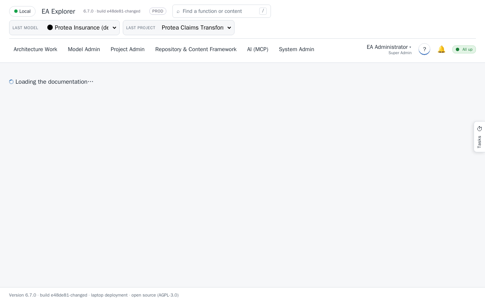

Read the documentation inside EA Explorer
For: Practising architects, System Admin, Developers, Platform developers
Every document, the command line help and the release notes, in the app.

#/documentationWhy do this
The documentation is inside EA Explorer: getting started, what it does, the command line, the release notes. You do not need to leave the app to find out how something works.
EA Explorer covers a lot of ground. A few habits (search, help on every screen, your own requests and pins) make it feel smaller and get you to your work faster.
In TOGAF terms: General use of the tool, across every part of the Architecture Repository. See EA Explorer and the TOGAF Standard.
The goal: Every document about EA Explorer, inside it.
Steps
- Open ? › Documentation: every document.
- Pick a group or search.
- Open a document; print it if you need.